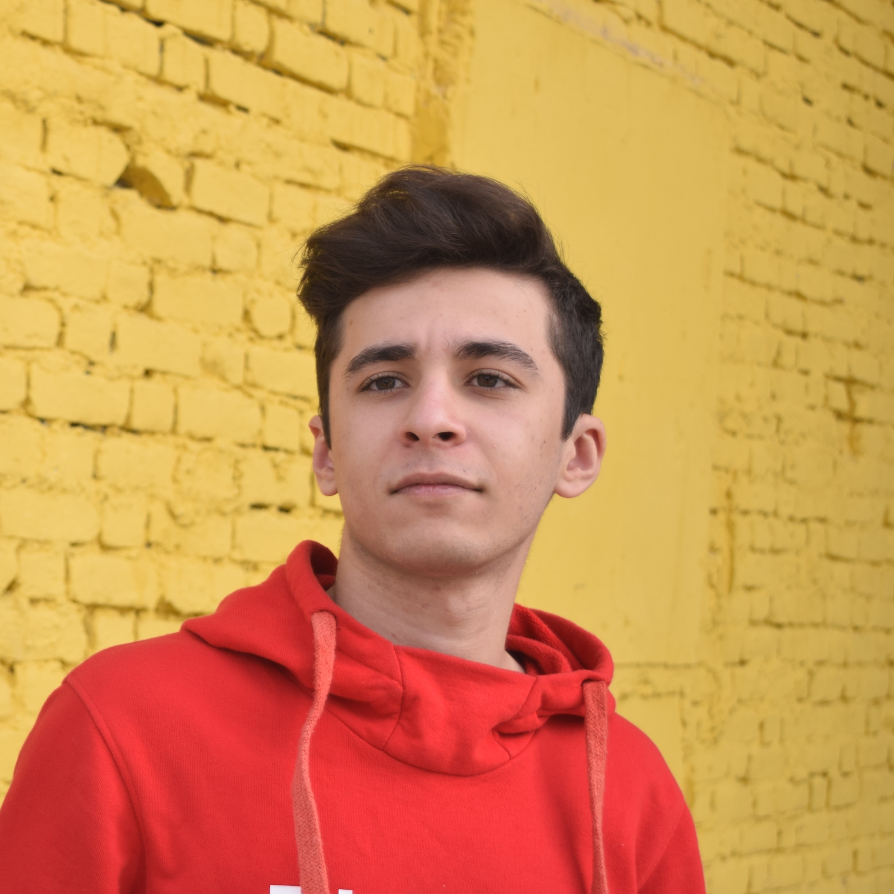

Mahdi Moghaddami
Ph.D. Student in Computer Science | Machine Learning & Applied AI
Biomedical Imaging Lab, Oakland University · Rochester Hills, MI
🧠 About Me
I am a Ph.D. student in Computer Science and Informatics at Oakland University (expected December 2027), where I also earned my M.Sc. in Computer Science en route in April 2026 and serve as a Graduate Research Assistant in the Biomedical Imaging Lab. My research focuses on machine learning for healthcare, longitudinal and multimodal disease progression modeling, graph neural networks, natural language processing, and agentic AI systems.
🌟 Currently looking for a summer internship opportunity! 🌟
Education
Oakland University
May 2023 – Dec 2027 (expected)Oakland University
Apr 2026Iran University of Science and Technology
Sep 2016 – Feb 2022Research Interests & Technical Stack
Research Interests
Machine Learning
LLM & Agents
Data & Visualization
Programming
Tools & Neuroimaging
💼 Experience
Research Experience
Graduate Research Assistant
May 2023 – Present- Engineered a distributed, containerized Slurm HPC pipeline for curation, QC, slice-timing recovery, and FreeSurfer feature extraction of 5+ TB of resting-state fMRI (rs-fMRI) and T1-weighted neuroimaging data (3,218 time points, 1,322 subjects) for downstream deep learning models. [Code]
- Architected History-Aware Connectome Learning (HACL) in PyTorch, a multimodal GNN-Transformer for longitudinal diffusion MRI and clinical histories; a 19-configuration ablation and log-odds ensembling raised 5-fold participant-grouped balanced accuracy from 70.9% to 80.3% (0.864 ROC-AUC) across 340 windows from 122 ADNI subjects (CVPR 2027 – under review). [Code]
- Designed a history-aware spatio-temporal GNN with recurrent encoders for rs-fMRI connectivity data from 303 ADNI subjects; achieved 82.9% overall accuracy and 68.8% accuracy on cognitively normal to mild cognitive impairment conversion (SPIE 2026). [Code]
- Developed a Transformer for next-visit diagnosis from incomplete longitudinal histories of 1,627 participants; evaluated against recurrent baselines and achieved 87.4% balanced accuracy and 92% mean AUC in 10-fold cross-validation (CHIL 2025). [Code]
Undergraduate Research Mentor
Apr 2024 – Jul 2024- Supervised two undergraduate researchers on short-term financial time-series forecasting with an Informer model, guiding data collection, model design, and evaluation; co-authored a research report and a poster presented at Michigan State University.
Undergraduate Researcher
Oct 2019 – Aug 2020- Built 4-class Persian stance detection models (Claim-Headline and Claim-Article) for fake news verification in TensorFlow/Keras and Hugging Face Transformers; compared fine-tuned ParsBERT against StackLSTM, Multilingual BERT, scikit-learn (AdaBoost, random forests, MLPs), and PyTorch LSTM baselines, raising 80/20 validation accuracy from 62% to 81.3% (2,029 headline pairs) and 72% to 83.8% (1,997 article pairs).
Industry Experience
Machine Learning Engineer
Jun 2021 – Feb 2022- Extended the ParsBERT stance-detection model to a 28% larger dataset, raising F1 from 0.62/0.71 to 0.86/0.82 (headline/article-to-claim) with a custom Keras categorical focal loss, handcrafted feature fusion, SMOTE/ADASYN class-imbalance ablations, and grid searches over (α, γ), optimizers, and sequence lengths.
- Architected cross-platform social-bot detection over 508 GB of raw data (10.1K Twitter, 7.7K Instagram accounts) using FastText embeddings, tsfresh time-series features, PyTorch/Keras multi-branch CNN-RNNs, and GridSearch-tuned ensembles (0.77 Twitter F1; 91.8% Instagram accuracy); deployed inference via REST APIs.
Front-End Web Development Intern
May 2019 – Aug 2019- Built a company website with Angular and OpenStreetMap to display where farm IoT devices were transmitting signals and the associated signal data.
Teaching Experience
Teaching Assistant
2023 – Present- TA for 7 courses including Visual Computing and Deep Learning and Applications; held office hours, graded and designed assignments, and assisted with labs and exams.
- Authored a PyTorch/ResNet-18 laboratory assignment on image processing and CNN evaluation for graduate Visual Computing (CSI 5550). [Code] [PDF]
Teaching Assistant
2019 – 2020- TA for 4 courses: Data Structures, Algorithm Analysis and Design, Foundations of Computers and Programming (Python), and Advanced Computer Programming (C#).
🛠️ Selected Projects
Multi-Agent AI Coach for Student Stress Management
Fall 2026- Built a 5-role multi-agent LLM stress coach (Planner, Analyst, Writer, Critic, Memory Manager) in Python (aisuite, Pydantic, Gemini 3.6 Flash) on the StudentLife dataset, integrating 8 leak-free, time-bounded data/resource tools, 8 reusable coaching skills, planning, reflection, and persistent preference memory.
- Ran a 9-configuration ablation across 20 longitudinal cases (8 participants) with simulated goals and feedback: 100% decision agreement (20/20) with manual labels, 4.81/5 mean quality across 16 sent messages from an independent GPT-5.4-mini judge, and 0.267 mean absolute difference from blind human ratings (1–5 scale).
Text Summarization with Foundation Models
Winter 2026- Fine-tuned BART-base on 202,914 arXiv training papers; achieved ROUGE-1 of 0.3309 on 6,440 test papers.
- Benchmarked pretrained Longformer-LED and two extractive baselines; LED achieved ROUGE-1 of 0.4531 and ROUGE-L of 0.2673. Deployed models on Hugging Face Spaces as an interactive Gradio app.
Model Compression for Edge AI
Fall 2024-
Implemented custom CNN layers, optimizers, and loss functions in PyTorch from scratch (no
torch.nnlayers), then combined knowledge distillation and pruning on CIFAR-10. - Reduced the nonzero parameter count by 92.9% (553,514 to 39,206); retained 77.26% test accuracy, 2.96 percentage points below the teacher model’s 80.22%.
Deep Learning for Autonomous Drone Navigation
Winter 2024-
Trained a lightweight 8-layer residual CNN (
resnet8) in TensorFlow/Keras on ~33.8k cross-domain car-driving and bicycle-mounted images to jointly predict steering angle and collision probability with dynamically scheduled loss weighting; achieved 95.3% collision accuracy (0.895 F1) and 0.181 steering RMSE. - Built a low-latency ROS (Python/C++) closed loop turning live 200×200 grayscale Parrot Bebop camera frames into low-pass-filtered velocity and yaw commands; validated obstacle avoidance in indoor and outdoor tests.
📄 Publications & Research
Published
-
Predicting Alzheimer’s Disease Progression Using rs-fMRI and a History-Aware Graph Neural Network
Moghaddami, M., Siadat, M.-R., Toma, A. T., Laming, C. P., and Fu, H. (2026). Medical Imaging 2026: Computer-Aided Diagnosis, Proceedings of SPIE, vol. 13926, 1392604.
-
Transformer Model for Alzheimer’s Disease Progression Prediction Using Longitudinal Visit Sequences
Moghaddami, M., Schubring, C., and Siadat, M. (2025). Proceedings of the Sixth Conference on Health, Inference, and Learning (CHIL), PMLR 287, pp. 804–816.
Nominee, SECS Best Graduate Paper Award, Oakland University (2025)
Under Review
-
History-Aware Connectome Learning for Alzheimer’s Disease Progression Prediction from Longitudinal Diffusion MRI
Moghaddami, M., Piggott, B., and Siadat, M.-R. (2026). Under review at the IEEE/CVF Conference on Computer Vision and Pattern Recognition (CVPR 2027).
Posters
-
Profit Maximization in Short-Term Financial Instrument Trading with Transformer Value Forecasting
Chunn, J., Keefer, I., Siadat, M., and Moghaddami, M. (2024). Mid-Michigan Symposium for Undergraduate Research Experience (MidSURE).
-
Comparative Study of Cognitive Impairment Modeling for Alzheimer’s Disease – Longitudinal vs. Cross-Sectional
Moghaddami, M., Siadat, M.-R., and Babajani-Feremi, A. (2023). IEEE-EMBS International Conference on Biomedical and Health Informatics (BHI).